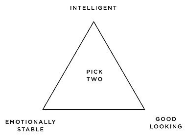
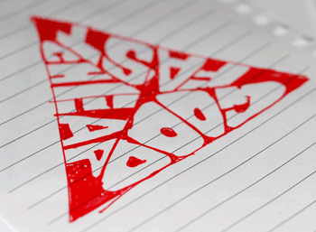
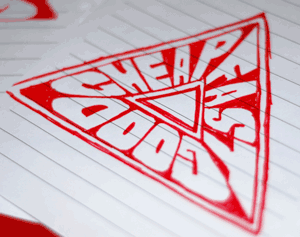

There is a saying in physical manufactoring that goes “Fast, Cheap and Good—pick two”. It’s true, you can get things made at a high-quality and fast, but you will pay the price. If you want something fast and cheap, the quality won’t be good. If you want it cheap and good, you can’t get it made fast. This is the trinity in which your work will be contained. The good news is that you can exist at any point within the triangle—right in the middle or to any extreme, but as you move around, sacrifices need to be made in the production cycle.
I know the saying has become cliché. You can see it all around, there are plenty of these three attribute sayings which are pulling at each other such as; “Intelligent, Emotionally Stable, and Good Looking”, but the fast, cheap, good saying has stuck with me for awhile.
Recently, I watched a video of Russell Davies mentioning this saying during his Do Lecture from 02008 with Matt Jones. That spurred me into action and got my desire for a physical object yearning.
It motivated me to doodle-up a nice design which could be used for a t-shirt. (At the moment t-shirt worthiness is my new design metric.)
So I sat down and started doodling the obvious triangle design with the three words at each point. It worked, but wasn’t stylish enough to warrant a t-shirt. Next, I set about trying to divide the triangle into three smaller triangles. Then in each of those smaller triangles illustrate one of the words.
The resulting sketch worked, but looked lumpy. You can see each word and how they occupy their own triangle, but they get pretty stretched out of proportion in the middle to reach the center and the corners are difficult to fill in because the letters don’t fit to the edges. That means the corners, the most defining part of a triangle, weren’t made from the letters, but from the illustration frame. This all stems from the attempt to make the text baseline the edge of the triangle. The text was also set in all uppercase to prevent descenders such as the P and G from breaking out of the frame.
In the next iteration of the design, I tried to put a triangle in the triangle, that way the text had a new baseline. It would lie flatter and I could use perspective on the letters rather than stretching them to fit into the shape. The text therefore got flipped so that the baseline isn’t the outer edge, but rather the new inner triangle. This made it pop-off the page and look as if you are travelling through a tunnel rather text on a flat triangle. One comment about the new design was that it looked more like a super-hero logo than an infographic.
I liked where these sketches where heading, so I moved over to Illustrator and started to draw them as a vectors. For the t-shirt, I knew I would be sending a vector file, rather than a jpeg, to the printer so the more time spent in Illustrator the better the final output.
I made a few mock-ups of the design and tweaked the letters and curves. Everything is hand-drawn, it isn’t a font that has been stretched around, it’s points and curves in the shapes of letter forms. Which means the quality of the final design is both good and bad, there are plenty of mistakes with the actual perspective, but that fudging was needed for legibility of the design.
Once I was happy with the text, it became an issue of what parts were printed and what parts were hollow (see through to the shirt). I could have the text printed and left the triangle empty, or the other way around. It also leads to question of, do you need the triangle at all? Can it be reduced further: is the shape of the text enough to understand the triangular reference?
Then after all those pressing questions, which way is up? What word goes on top? Arrrrrg, so many possibilities and things to think about with only three simple words. You wouldn’t think it would be this hard!
In the end, I settled on a design and layout and sent it to the printer. I felt that the triangle was still needed because the points weren’t sharp enough with just the text. I ended-up putting “Fast” on top, because the pointy corners of the letters made the most sense to be on the flat side. The P and G from cheaP and Good matched-up nicely next to each other, since it was the only corner with two rounded edges it needed to be unique. Partly because of the letter forms and partly because of the super-hero comment, I went with the triangle pointing downward in hommage to the original superman logo.
Once the vectors were all cleaned and finished, I sent it off to spreadshirt. They approved the design and it went to print. I am very happy with the result—hopefully it will spark some discussions as I wear it.
I ended-up leaving the text hollow and only the negative space of the triangle was printed onto the shirt leaving the letters see-through. I choose white on a red shirt. After the fact, I was told that people who wear red shirts are there to make a bold statement. I just liked the color since I have plenty of green, yellow, blue and other shirts, red felt like it was lacking in my collection. The design is simple enough that any two-color combination should work fine.
The vector file is freely available, if you wanted to tweak it, translate it, print your own shirts or other apparell, feel free. It is your choice how you want to balance the triangle in your purchase, you can get that shirt made good and fast, but maybe not cheaply, or fast and cheap but the quality will suffer—it’s your call.